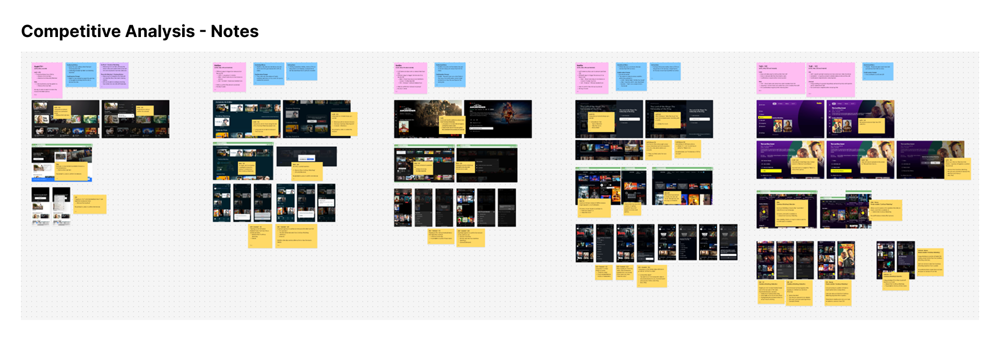
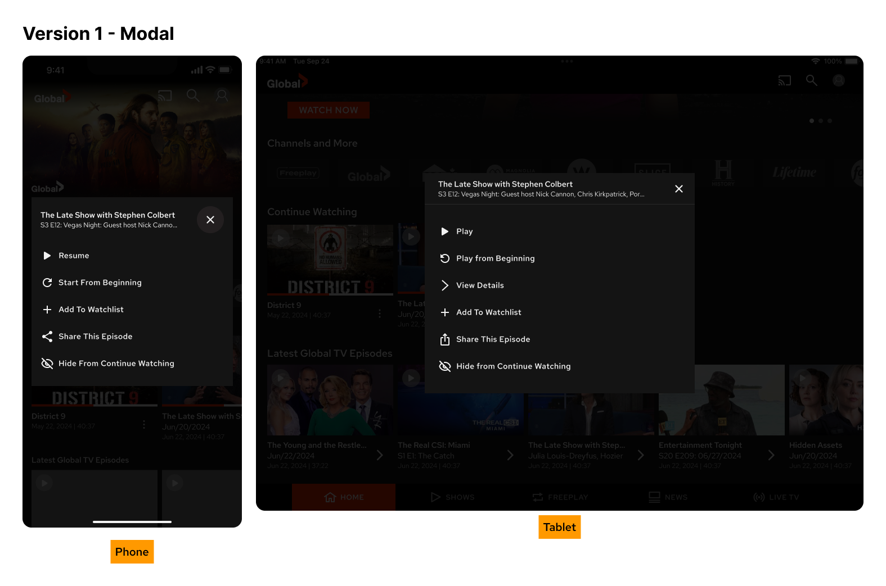
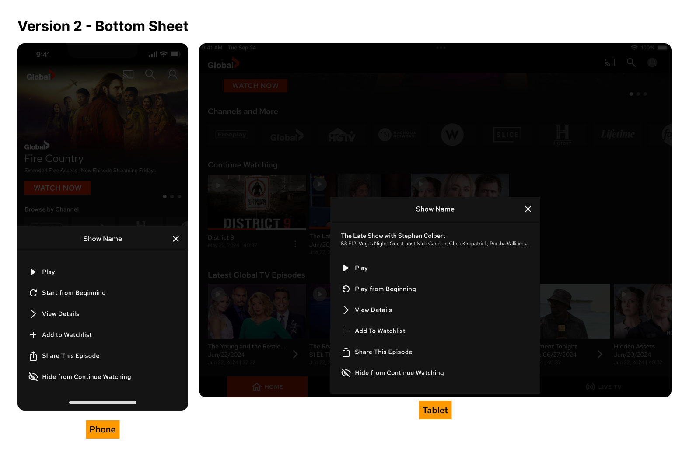
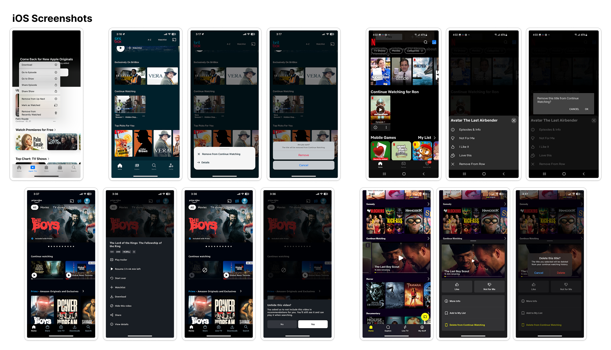
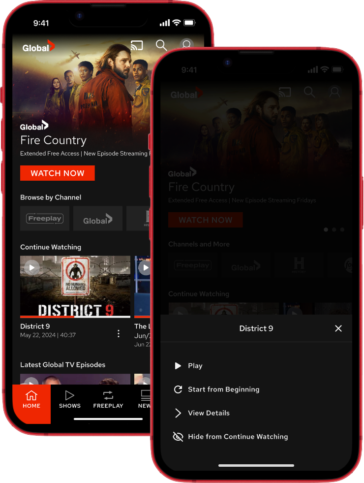

Overview
The Continue Watching row is one of the most visible surfaces in the Global TV app — but the experience of managing it was buried. Users who wanted to remove a show from their history or hide something they'd already finished had no easy path to do so without leaving their current screen.
I designed a contextual bottom sheet interaction that surfaces the right actions inline — without disrupting the browsing experience. The pattern shipped on iOS and Android, and was later adopted across two additional areas of the app.
Users couldn't easily manage their Continue Watching history without navigating away from their current context. The desired action — hiding or removing a title — required too many steps, or wasn't discoverable at all.
Competitive analysis across streaming platforms → two design directions (modal vs bottom sheet) → iteration with engineering constraints → a lightweight, extensible interaction pattern that shipped and scaled.
The Problem
The Continue Watching row is prime real estate — it sits near the top of the home screen and represents each user's personal viewing history. But for all its prominence, users had almost no ability to manage it. A show they'd abandoned, a film they'd already finished, or an episode that appeared by mistake would sit there indefinitely.
"How might we let users manage their Continue Watching list with less friction — without interrupting their browsing flow?"
The path to remove a title was either deeply buried in account settings or didn't exist in the mobile app at all. Users who were bothered enough would abandon the app rather than go looking. The result was a row that felt out of the user's control — the opposite of what a personalised experience should feel like.
No in-context path to remove titles from Continue Watching
Management required navigating away from the home screen
Row felt impersonal and stale — no sense of user control
No consistent pattern across iOS and Android for contextual actions
Process
Before exploring solutions, I mapped how competing streaming platforms handled watchlist and history management — surveying Netflix, Disney+, Amazon Prime Video, Apple TV+, Crave, and others across both iOS and Android.
The analysis surfaced two dominant patterns: modal overlays and bottom sheets. Both could surface contextual actions — but they behaved very differently in practice on small screens. The research gave the team a shared starting point and aligned decision-making against real-world precedent rather than assumption.


The first direction used a centred modal overlay — a pattern familiar from desktop web experiences and seen in some tablet streaming apps. It kept the background visible, confirming context, while surfacing a focused action list.
On tablet, the modal worked well — there was enough screen space for it to feel intentional and unobtrusive. But on phone, the centred dialog sat awkwardly in the middle of the screen, required a long thumb reach, and felt heavier than the action warranted.
Concern flagged in review: centred modals on phone require reaching across the screen. For a casual, low-stakes action like hiding a show, the interaction cost felt too high.
The second direction replaced the modal with a bottom sheet — anchored to the bottom of the screen, within easy thumb reach, and dismissable with a simple swipe or tap outside.
On phone, the difference was immediate. The sheet felt native to the platform — consistent with how iOS and Android both handle contextual actions at the OS level. On tablet, it adapted gracefully into a narrower anchored panel rather than spanning the full width, preserving hierarchy without breaking the layout.

With the bottom sheet direction confirmed, I designed the complete set of iOS screens — covering entry points, long-press trigger, action states, and how the sheet behaves across the Continue Watching and Watchlist contexts.

Design Decisions
Streaming is a lean-back experience. Any friction — an unexpected modal, a confusing hierarchy, an action that feels irreversible — breaks the browsing mood. Every decision in this design aimed to keep the interaction feeling as casual as the action itself.
Centred modals demand attention and signal importance. A bottom sheet is conversational — it appears, offers options, and disappears without making a scene. For a casual action like "hide from continue watching," this tone mattered. The sheet also lives within the natural thumb zone on phone, reducing the physical effort of the interaction.
The sheet offers only what's relevant in context: Play, Start From Beginning, View Details, Add To Watchlist, Share This Episode, and Hide From Continue Watching. No global settings, no nested menus. The action hierarchy is flat — the most common actions appear first, and "hide" is clearly labelled to signal exactly what it does without ambiguity.
The sheet was built as a reusable component, not a one-off. The action list is driven by context — the same sheet pattern adapts its contents depending on where it's triggered from (Continue Watching, Watchlist, Show Detail). This made it straightforward for engineering to implement once and extend, which is exactly what happened when the pattern was adopted in two more app surfaces.
While the visual implementation differed slightly between iOS and Android to respect each platform's native patterns, the interaction model and action vocabulary were kept identical. This meant the design shipped consistently across both platforms — reducing QA complexity and keeping the user experience coherent for people who switch between devices.
Final Design
The shipped bottom sheet brings contextual control to Continue Watching — surfacing the right actions exactly where users are, without breaking their flow.

Long-press on any Continue Watching thumbnail — consistent with native iOS and Android contextual menu conventions
Play · Start From Beginning · View Details · Add To Watchlist · Share This Episode · Hide From Continue Watching
Swipe down or tap outside the sheet — returns user to exactly where they were with no state change
Reflection
Starting with competitive analysis grounded the design conversation in real-world patterns rather than opinion. When the choice between modal and bottom sheet came up in review, the data was already there — it wasn't a debate about personal taste, it was a discussion about platform conventions and interaction cost.
The bigger lesson was around extensibility. A pattern designed for one problem can solve several — but only if you design the abstraction before you need it. Building the bottom sheet as a flexible, context-driven component from the start made adoption across two other app surfaces a matter of configuration, not redesign.
Add a undo/confirmation state for the "Hide from Continue Watching" action — giving users a low-stakes, reversible moment of reconsideration before the item is removed. The current flow is clean, but a transient toast with an "undo" action would close the loop on perceived control.